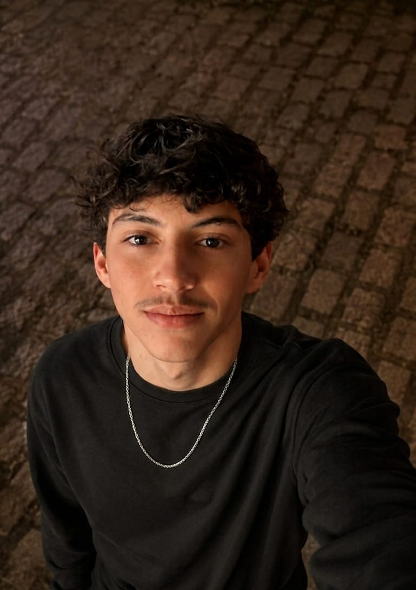

Olá, sou o Kael

Tenho 16 anos, sou aluno de Informática e desenvolvedor de sistemas e gosto de música e jogos.
Minhas Especialidades



Tenho 16 anos, sou aluno de Informática e desenvolvedor de sistemas e gosto de música e jogos.